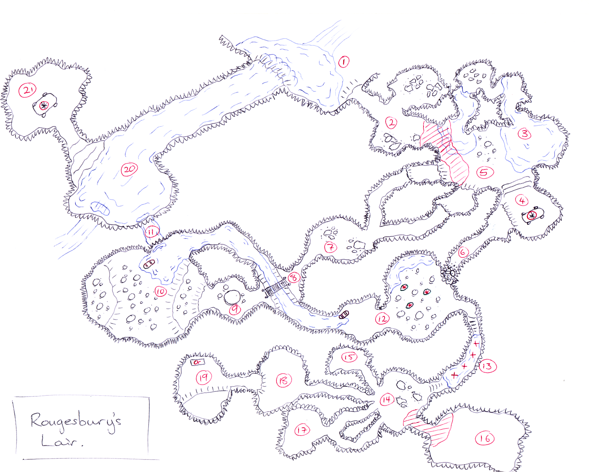

The Waterfall Hideout
Plot Hook
- Captured kobolds from the some previous mission divulge information of the lair's whereabouts
- OR The PCs stumble across the secret hideout of the infamous Rougesbury, what are the odds?
Rougesbury's Lair
Conditions
Make good use of darkness, echoes, the perceived vulnerabilities of crawl spaces and climbing with inappropriate weapons and swimming in water in heavy armour. Field running guerilla combats, ambushes and traps. Think of the fear of being in someone else's element, and they know it.Details
Secret Entry (Behind Waterfall, who would guess?) - Area 1The first place the PC should look, Easy DC 15 climb to enter
Secret, Secret Entry (and lookout) - Area 2Guard post with lookouts most times, hard climb (DC 20), with armed resistance
A River in the Cliff - Area 20No resistance, powerful river current upstream, only feasible exits 21, 11 and back to 1
Teleport Altar - Area 21Wyrm priest teleports out via altar on sight. There is no way for the PCs to operate the mysterious altar
Teleport Altar - Area 4Kobolds can teleport from this altar to area 21 and back, to help flank invaders
Swim-Through Tunnel - Area 11 (DC 10 Swim check) Mushroom Garden Cavern - Area 10 (Boat to area 12) Giant Mushroom - Area 9Any careless or violent movement in this area sends spores exploding out from the giant mushroom (blindness, coughing, dazing all those nearby)
Rickety Bridge - Area 8, 2Ambush point. Random planks break +6 vs. REF, fall to shallow river below (1d10). Also rock drop point if PCs use boat from area 10 to 12.
Common Recreation - Area 5, 3Common living / bathing area. Low ceilings in places (crawl for medium creatures)
A Tight Squeeze - Area 6 (Crawl point over rubble from 6 to 12) 3 Exploding Mushrooms - Area 12: (+6 vs. FORT, 2d6+4 poison and weakened [save ends]) 4 Submerged Spike Traps (in a row!) - Area 13As per false-floor pit (DMG p87) only no pit, just nasty spikes. Target takes damage as per trap and is slowed from spike pain rather than falling (save ends)
Living Areas - Area 14, 17, 18 (Adults), Area 16 (Nursery - low ceiling) Roguesbury's Lair - Area 19 (Adults), Area 16 (Nursery)Big Kobold boss, - I have a Lair! - with major milestone like treasure and stolen goods. 